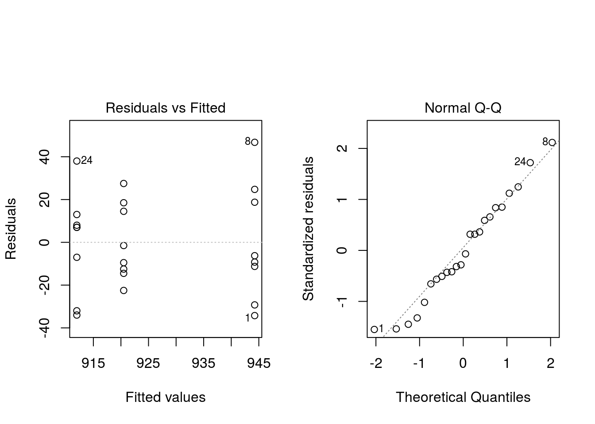

Exam 2011 (Sep 5, 2011)
The problems are based on the simulated data of Appendix 1. There are 24 observations and the variables are as follows:
- For Three types of feed:
For1,For2ogFor3. - Frittgående The variable is
Jafor freely moving chickens and otherwiseNo. - Besetning Lifestock. The variable indicates which of 6 lifestock (or farms for that matter) the chicken comes from.
- Vekt Weight in gram (g).
Exercise 1
Only variables Besetning and Vekt are used in this exercise. Consider,
\[ \begin{aligned} y_{ij} &= \mu + \tau_i + \epsilon_{ij} \text{ where, } \\ i &= 1, 2, \ldots, 6 \text{ corresponding to }\texttt{Bes1}, \texttt{Bes2}, \ldots, \texttt{Bes6} \\ j &= 1, 2, \ldots, 4, \text{ corresponding to the four observations of each Besetning} \\ y_{ij} &= `Vekt`, \; \tau_i \sim \text{N}(0, \sigma_\tau^2), \; \epsilon_{ij} \sim \text{N}(0, \sigma^2) \end{aligned} \]
The random variables on the right hand side of the model equation are assumed to be independent.
Use the output in Appendix 2 to test at 5% significance level the null hypothesis
\[H_0: \sigma_\tau^2 = 0\]
Formulate a conclusion.
The p-value is 0.176 and therefore we cannot reject the null hypothesis. In other words, we cannot claim a significant effect of Besetning.
Use the output in Appendix 2 to estimate \(\sigma^2\). Construct a 95% confidence interval for \(\sigma^2\). What is the 95% confidence interval for the standard deviation (\(\sigma\))? Interpret the confidence interval for \(\sigma\).
Here, we have, \(\hat{\sigma}^2 = \text{MSE} = 605.722\) and degree of freedom corresponding to residual is 18. Therefore \(\text{SSE} = \text{MSE} \times df = 10902.996\)
From \(\chi^2\) table, we have \(\chi^2_{0.975, 18} = 8.231\) and \(\chi^2_{0.025, 18} = 31.526\)
Thus, the 95% confidence interval for \(\sigma^2\) is,
\[ \left[ \frac{\text{SSE}}{\chi^2_{0.025, 18}}, \frac{\text{SSE}}{\chi^2_{0.975, 18}} \right] = \left[345.84, 1324.67\right] \]
Further, 95% confidence interval for standard deviation \(\sigma\) can be obtained by taking square root of confidence interval for \(\sigma^2\), i.e. 18.6, 36.4.
Interpretation: We are 95% sure that the standard deviation is between 18.6 and 36.4.
The correlation coefficient for observations from the same Besetning is
\[\rho = \frac{\sigma_\tau^2}{\sigma_\tau^2 + \sigma^2}\]
Use the output in Appendix 2 to estimate \(\rho\). Comment.
The estimate of correlation coefficient (\(\hat{\rho}\)) is obtained as,
\[\hat{\rho} = \frac{\hat{\sigma}_\tau^2}{\hat{\sigma}_\tau^2 + \hat{\sigma}^2} = \frac{112.3}{112.3 + 605.7} = 0.156\]
There are several ways to comment on this:
15.6414899% of the total variability is between Besetning. Generally this number is between 0 and 100%. The value 0 would mean that the variable Besetning is irrelevant whereas the value 100% would imply no error, i.e., all variance explained by Besetning.
The correlation in this model is always between 0 and 1 (or equivalently between 0 and 100%); here the correlation for animals from the same Besetning is estimated to 0.1564149
Regarding i) and ii) It is difficult to say that whether 0.1564149 or 15.6414899% is small or large and there is no definitive answer. Most would say that the correlation is rather low and one could add that numerator \(\sigma_\tau^2\) is not significantly greater than 0.
Mean
Vektis 925.6. Use this and the output of Appendix 2 to estimate \(\mu\) and to calculate a 95% confidence interval for \(\mu\).We have, \(\hat{\mu} = 925.6\)
Here, \(a = 6\) and from t-table, \(t_{0.025, a - 1} = t_{0.025, 5} = 2.571\). Hence, the 95% confidence interval for \(\mu\) is,
\[ \begin{aligned} \hat{\mu} - t_{0.025, 5} \sqrt{\frac{\text{MS}_\text{Treatment}}{N-a}} &\le \mu \le \hat{\mu} + t_{0.025, 5} \sqrt{\frac{\text{MS}_\text{Treatment}}{N - a}} \\ 925.6 - 2.571 \sqrt{\frac{1054.97}{24}} &\le \mu \le 925.6 + 2.571 \sqrt{\frac{1054.97}{24}}\\ 908.56 \le \mu \le 942.64 \end{aligned} \]
Exercise 2
We now use the variables For, Frittgående and Vekt and consider the model,
\[ \begin{aligned} y_{ijk} &= \mu + \tau_i + \beta_j + (\tau\beta)_{ij} + \epsilon_{ijk} \text{ where, } \\ i &= 1, 2, 3 \text{ corresponding to }\texttt{For1}, \texttt{For2}, \text{ and }\texttt{For3} \\ j &= 1, 2, \text{ corresponding to }\texttt{Ja} \text{ and } \texttt{Nei} \\ k &= 1, 2, \ldots, 4 \text{ corresponding to replications,} \\ y_{ijk} &= \texttt{Vekt}, \; \epsilon_{ijk} \sim \text{N}(0, \sigma^2), \\ \sum_{i = 1}^3 \tau_i &= 0 \; \sum_{j = 1}^2 \beta_j = 0 \; \sum_{i = 1}^3 (\tau\beta)_{ij} = 0 \; \sum_{j = 1}^2 (\tau\beta)_{ij} = 0 \end{aligned} \]
We assume \(\epsilon_{ijk}\) to be independent.
Use the output in Appendix 3 to determine if there is a significant interaction between For and Frittgående by stating a null hypothesis and formulating a conclusion. Use 5% significance level. Use the output in Appendix 3 to determine if there is a main effect of the variable Frittgående by stating a null hypothesis and formulating a conclusion. Use 5% significance level.
The null hypothesis of no interaction can be stated as,
\[H_0: (\tau\beta)_{ij} = 0 \text{ for all}i\text{ and }j\]
We do not reject as the p-value is greater than 0.05. A significant interaction would have meant that the effect of Frittgående depends on For and vice versa; there is no significant interaction.
Next, the null hypothesis of no Frittgående effect is
\[H_0: \beta_1 = \beta_2 = 0\]
We do not reject as the p-value is greater than 0.05. Therefore, we cannot claim that there is a significant effect of Frittgående.
For the remaining part we use the model
\[ \begin{aligned} y_{ij} &= \mu + \tau_i + \epsilon_{ij}, \text{ where, } \\ i &= 1, 2, 3, \text{ corresponding to }\texttt{For1}, \texttt{For2}, \text{ and } \texttt{For3} \\ j &= 1, 2, \ldots, 8 \text{ corresponding to the eight observation for each }\texttt{For} \\ y_{ij} &= \texttt{Vekt}, \; \epsilon_{ij} \sim \text{N}(0, \sigma^2), \end{aligned} \]
We assume \(\epsilon_{ij}\) to be independent.
Use the output in Appendix 4 to show that there are significant differences between For at 5% significance level. Between which types of For are there differences? Use Tukey’s test and the output of Appendix 4 for your answer.
The p-value is below 0.05 and we therefore reject. In other words, we can claim that there is a significant difference depending on For. Tukey demonstrates a significant effect only between
For3ogFor1, p-value=0.03.Use the output in Appendix 4 to estimate \(\mu, \tau_1, \tau_2\) and \(\tau_3\)
Using Appendix 4, we have,
\(\hat{\mu}\) = 925.58 \(\hat{\tau}_1\) = 18.67 \(\hat{\tau}_1\) = -5.08 Using the assumption of sum-to-zero effect, i.e. \(\sum_{i = 1}^3 \tau_i = 0\), we have,
\[\tau_1 + \tau_2 + \tau_3 = 0 \Rightarrow \tau_3 = -13.59\]
We would like to compare fortype
For1against the average ofFor2andFor3. Formulate a suitable contrast, compute a 95% CI and comment on the result.The contrast can be formulated as,
\[\Gamma = \tau_1 - \frac{1}{2}\left(\tau_2 + \tau_3\right), \text{ i.e., } c = \left(1, -\frac{1}{2}, -\frac{1}{2}\right)\]
The estimated difference is,
\[\hat{\Gamma} = 18.67 - 0.5 \times -18.67 = 28.005\]
The variance of \(\hat{\Gamma}\) is,
\[\text{var}\left(\hat{\Gamma}\right) = \frac{\sum_{i = 1}^3 c_i^2 \times \hat{\sigma}^2}{n} = \frac{836.25}{8} = 104.53\]
Therefore, standard error is,
\[\text{SE}\left(\hat{\Gamma}\right) = \sqrt{104.53} = 10.2239914\]
From t-table we have, \(t_{0.025, 21} = 2.08\), so,
95% confidence interval for \(\Gamma\) is,
\[\hat{\Gamma} \pm 2.08 \times \text{SE}\left(\hat{\Gamma}\right) = \left[6.74, 49.27\right]\]
Comment: The difference between
For1and the average of the others is estimated to 28.005. There is 95% probability that the true difference is in the interval from 6.74 to 49.27.Calculated predicted
Vektfor a chicken fed onFor1. Also calculate the residual for the first observation of Appendix 1.The predicted
Vektand residual for the first observation is,\[ \begin{aligned} \text{Predicted} &: \hat{\mu} + \hat{\tau}_1 = 944.25 \\ \text{Residual} &: 910 - 944.25 = -34.25 \\ \end{aligned} \]
Describe the assumptions for the model in b) above. Would you say that the assumptions are met? Your answer is supposed to be brief and you can use the figures of Appendix 5.
We have to assume independence, normality and constant variance. The two last assumptions appear OK based on the figures: There are no striking deviations from the straight line and no striking pattern in the plot of fitted values against the residuals.
Independence is not tested formally, but Exercise 1 does not indicate strong deviation from independence.
Appendix 1
| For | Frittgående | Besetning | Vekt |
|---|---|---|---|
| For1 | Ja | Bes1 | 910 |
| For1 | Ja | Bes1 | 938 |
| For1 | Ja | Bes2 | 933 |
| For1 | Ja | Bes2 | 915 |
| For1 | Nei | Bes1 | 963 |
| For1 | Nei | Bes1 | 935 |
| For1 | Nei | Bes2 | 969 |
| For1 | Nei | Bes2 | 991 |
| For2 | Ja | Bes3 | 908 |
| For2 | Ja | Bes3 | 911 |
| For2 | Ja | Bes4 | 935 |
| For2 | Ja | Bes4 | 919 |
| For2 | Nei | Bes3 | 939 |
| For2 | Nei | Bes3 | 906 |
| For2 | Nei | Bes4 | 948 |
| For2 | Nei | Bes4 | 898 |
| For3 | Ja | Bes5 | 925 |
| For3 | Ja | Bes5 | 905 |
| For3 | Ja | Bes6 | 919 |
| For3 | Ja | Bes6 | 919 |
| For3 | Nei | Bes5 | 920 |
| For3 | Nei | Bes5 | 880 |
| For3 | Nei | Bes6 | 878 |
| For3 | Nei | Bes6 | 950 |
Appendix 2
Analysis of variance (unrestricted model)
Response: Vekt
Mean Sq Sum Sq Df F value Pr(>F)
Besetning 1054.97 5274.83 5 1.74 0.1761
Residuals 605.72 10903.00 18 - -
Err.term(s) Err.df VC(SS)
1 Besetning (2) 18 112
2 Residuals - - 606
(VC = variance component)Appendix 3
Anova Table (Type II tests)
Response: Vekt
Sum Sq Df F value Pr(>F)
For 4470.3 2 4.9146 0.01981 *
Frittgående 816.7 1 1.7956 0.19691
For:Frittgående 2704.3 2 2.9731 0.07662 .
Residuals 8186.5 18
---
Signif. codes: 0 '***' 0.001 '**' 0.01 '*' 0.05 '.' 0.1 ' ' 1Appendix 4
Analysis of Variance Table
Response: Vekt
Df Sum Sq Mean Sq F value Pr(>F)
For 2 4470.3 2235.2 4.0093 0.03351 *
Residuals 21 11707.5 557.5
---
Signif. codes: 0 '***' 0.001 '**' 0.01 '*' 0.05 '.' 0.1 ' ' 1 Estimate Std. Error t value Pr(>|t|)
(Intercept) 925.583 4.820 192.043 <2e-16 ***
For(For1) 18.667 6.816 2.739 0.0123 *
For(For2) -5.083 6.816 -0.746 0.4641
--- Tukey multiple comparisons of means
95% family-wise confidence level
Fit: aov(formula = mdl4)
$For
diff lwr upr p adj
For2-For1 -23.75 -53.50714 6.007144 0.1340322
For3-For1 -32.25 -62.00714 -2.492856 0.0321413
For3-For2 -8.50 -38.25714 21.257144 0.7545317Appendix 5
